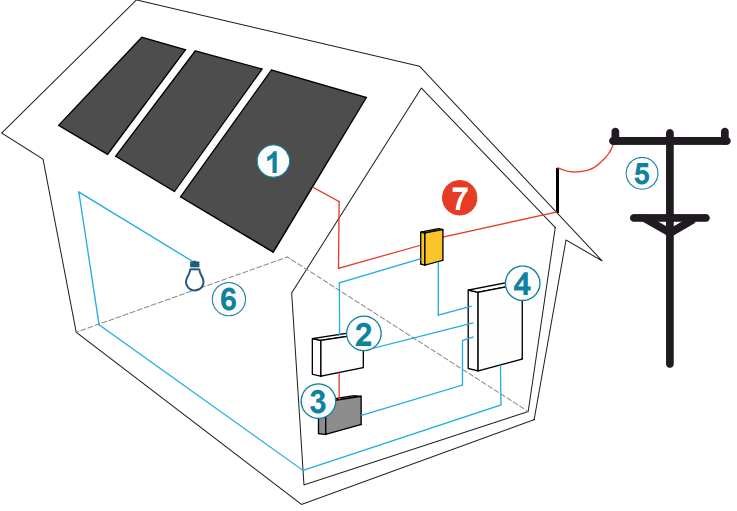
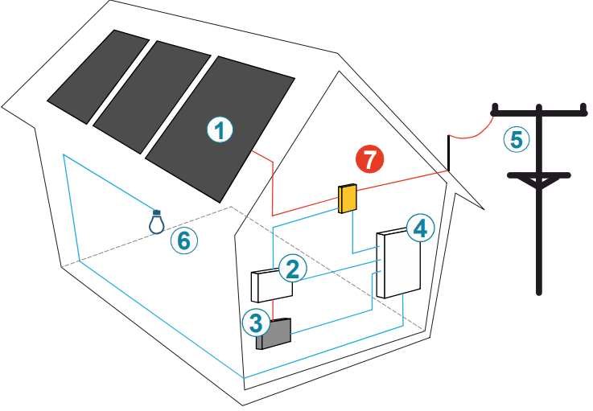

Instalaciones Fotovoltaicas
Sistemas de autoconsumo solar según el Manual de Bomberos del Ayuntamiento de Madrid
🔌 Introducción a las Instalaciones Fotovoltaicas (ITC-53)
Definición
La energía solar fotovoltaica aprovecha la radiación solar mediante el efecto fotovoltaico o fotoseléctrico, que consiste en la capacidad que tienen determinados materiales de absorber fotones (partículas luminosas) y liberar electrones, generando una corriente eléctrica.
La energía solar fotovoltaica aprovecha la radiación solar mediante el efecto fotovoltaico o fotoseléctrico, que consiste en la capacidad que tienen determinados materiales de absorber fotones (partículas luminosas) y liberar electrones, generando una corriente eléctrica.
Características
Se trata de un tipo de energía renovable, inagotable y no contaminante que puede producirse en instalaciones que van desde los pequeños generadores para autoconsumo hasta las grandes plantas fotovoltaicas.
Se trata de un tipo de energía renovable, inagotable y no contaminante que puede producirse en instalaciones que van desde los pequeños generadores para autoconsumo hasta las grandes plantas fotovoltaicas.
Funcionamiento del Autoconsumo
Las instalaciones fotovoltaicas para autoconsumo funcionan como una pequeña central de producción eléctrica que da servicio a una vivienda. La electricidad generada es consumida por el productor (usuario) y la energía sobrante se vierte a la red.
Las instalaciones fotovoltaicas para autoconsumo funcionan como una pequeña central de producción eléctrica que da servicio a una vivienda. La electricidad generada es consumida por el productor (usuario) y la energía sobrante se vierte a la red.
Bidireccionalidad
Cuando la unidad no es capaz de suministrar suficiente electricidad, el productor toma de la red la energía necesaria para cubrir su demanda. Por lo tanto, las viviendas con instalaciones fotovoltaicas también contarán con su acometida eléctrica convencional.
Cuando la unidad no es capaz de suministrar suficiente electricidad, el productor toma de la red la energía necesaria para cubrir su demanda. Por lo tanto, las viviendas con instalaciones fotovoltaicas también contarán con su acometida eléctrica convencional.
Rangos de Potencia
Los rangos de potencia para este tipo de instalaciones están entre 1,5 KW y 100 KW, pudiendo ser instalados en cualquier espacio exterior (tejados, terrazas, suelos, etc.).
Los rangos de potencia para este tipo de instalaciones están entre 1,5 KW y 100 KW, pudiendo ser instalados en cualquier espacio exterior (tejados, terrazas, suelos, etc.).
🧩 Componentes Básicos de un Sistema Fotovoltaico
Paneles Fotovoltaicos
Transforman la radiación solar en energía eléctrica mediante células de silicio
Regulador de Carga
Controla la carga y descarga de las baterías, protegiéndolas de sobrecargas
Acumulador (Baterías)
Almacenan la energía para su uso cuando no hay radiación solar
Inversor de Corriente
Convierte la corriente continua (DC) en corriente alterna (AC)
Contador Bidireccional
Mide la energía que fluye en ambos sentidos: de la red al usuario y viceversa
Protecciones Eléctricas
Fusibles y dispositivos de seguridad para proteger la instalación
 

☀️ Paneles Fotovoltaicos - Tipos y Características
Composición
Los paneles fotovoltaicos están formados por un conjunto de pequeños elementos rectangulares conocidos como células solares, protegidos de las condiciones meteorológicas por una lámina de EVA. Estas células, fabricadas fundamentalmente con silicio, absorben la luz solar convirtiéndola en corriente continua (DC).
Los paneles fotovoltaicos están formados por un conjunto de pequeños elementos rectangulares conocidos como células solares, protegidos de las condiciones meteorológicas por una lámina de EVA. Estas células, fabricadas fundamentalmente con silicio, absorben la luz solar convirtiéndola en corriente continua (DC).
Panel Monocristalino
• Aspecto uniforme con coloración oscura
• Alta pureza en silicio
• Celdas con forma octogonal
• Mayor eficiencia
• Vida útil superior a 30 años
• Alta pureza en silicio
• Celdas con forma octogonal
• Mayor eficiencia
• Vida útil superior a 30 años
Panel Policristalino
• Método de fabricación diferente
• Silicio fundido en moldes cuadrados
• Celdas perfectamente cuadradas
• Aprovecha totalidad de la superficie
• Menor eficiencia que monocristalino
• Silicio fundido en moldes cuadrados
• Celdas perfectamente cuadradas
• Aprovecha totalidad de la superficie
• Menor eficiencia que monocristalino
Capa Fina (Amorfos)
• Depósito de capas de material fotovoltaico
• No solo de silicio, también teluro de cadmio, etc.
• Apariencia homogénea
• Flexibles, adaptables a cualquier superficie
• Ideales para pequeñas aplicaciones
• No solo de silicio, también teluro de cadmio, etc.
• Apariencia homogénea
• Flexibles, adaptables a cualquier superficie
• Ideales para pequeñas aplicaciones
Tensiones de Salida y Conexiones
En el mercado encontramos paneles de 12V, 24V y 48V. Se pueden conectar en:
• Serie: Incrementa la tensión
• Paralelo: Incrementa la intensidad
• Mixta: Aumenta tanto tensión como intensidad
En el mercado encontramos paneles de 12V, 24V y 48V. Se pueden conectar en:
• Serie: Incrementa la tensión
• Paralelo: Incrementa la intensidad
• Mixta: Aumenta tanto tensión como intensidad
Sistemas de Anclaje en Cubierta
Se basan en una estructura de perfiles metálicos que soportan los paneles solares gracias a abrazaderas, anclados a la cubierta con soportes coplanares aluminados.
Se basan en una estructura de perfiles metálicos que soportan los paneles solares gracias a abrazaderas, anclados a la cubierta con soportes coplanares aluminados.
⚡ Reguladores de Carga
Función
Controla la carga y descarga de las baterías, instalado entre los paneles solares y la batería. Protege las baterías contra sobrecargas y evita descargas profundas.
Controla la carga y descarga de las baterías, instalado entre los paneles solares y la batería. Protege las baterías contra sobrecargas y evita descargas profundas.
Voltajes de Trabajo
Los paneles solares suelen trabajar a 12V DC o 24V DC. El regulador controla la entrada de energía dependiendo del estado de las baterías.
Los paneles solares suelen trabajar a 12V DC o 24V DC. El regulador controla la entrada de energía dependiendo del estado de las baterías.
Tipos de Reguladores
• MPPT (Maximum Power Point Tracker): Adapta la tensión del panel a la necesaria para la batería, buscando la máxima potencia
• PWM: Actúan como interruptores entre placa y batería, forzando a trabajar a la tensión de la batería
• MPPT (Maximum Power Point Tracker): Adapta la tensión del panel a la necesaria para la batería, buscando la máxima potencia
• PWM: Actúan como interruptores entre placa y batería, forzando a trabajar a la tensión de la batería
🔋 Baterías y Acumuladores
Función
Permiten almacenar la energía producida por las placas solares para utilizarla durante la noche o en días nublados.
Permiten almacenar la energía producida por las placas solares para utilizarla durante la noche o en días nublados.
Tensiones y Conexiones
Las baterías más usadas son de 12V DC y 24V DC. En instalaciones grandes pueden ser de 48V DC. Se pueden conectar en serie, paralelo o mixta.
Las baterías más usadas son de 12V DC y 24V DC. En instalaciones grandes pueden ser de 48V DC. Se pueden conectar en serie, paralelo o mixta.
Tipos de Baterías
• AGM: Para pequeñas instalaciones, sin mantenimiento
• Litio: Ligeras, compactas, rápidos tiempos de carga
• Monoblock: Las más habituales (coches, motos)
• AGM: Para pequeñas instalaciones, sin mantenimiento
• Litio: Ligeras, compactas, rápidos tiempos de carga
• Monoblock: Las más habituales (coches, motos)
Desconectador de Batería
Permite manualmente cortar la conexión de las baterías cuando se desee o el sistema lo requiera.
Permite manualmente cortar la conexión de las baterías cuando se desee o el sistema lo requiera.
🔄 Inversores de Corriente
Función
Transforman la corriente continua (DC) generada por la instalación solar en corriente alterna (AC) para uso doméstico.
Transforman la corriente continua (DC) generada por la instalación solar en corriente alterna (AC) para uso doméstico.
Tipos de Inversores
• Monofásico: Genera una sola fase de voltaje (230V)
• Trifásico: Genera tres fases de voltaje (400V)
• Monofásico: Genera una sola fase de voltaje (230V)
• Trifásico: Genera tres fases de voltaje (400V)
Especificaciones Técnicas
Voltaje de entrada: 12V DC o 24V DC
Voltaje de salida: 400/230V AC
Frecuencia: 50 Hz
Voltaje de entrada: 12V DC o 24V DC
Voltaje de salida: 400/230V AC
Frecuencia: 50 Hz
⚠️ Precauciones para Intervenciones de Bomberos
CPM Especial en Instalaciones Fotovoltaicas
En las viviendas con instalaciones fotovoltaicas encontraremos un CPM especial con contador bidireccional que cuenta con dos entradas y dos salidas. Mide la energía que fluye en ambos sentidos.
En las viviendas con instalaciones fotovoltaicas encontraremos un CPM especial con contador bidireccional que cuenta con dos entradas y dos salidas. Mide la energía que fluye en ambos sentidos.
PRECAUCIÓN CRÍTICA - RIESGO DE RETORNO DE ENERGÍA
Se debe tener especial precaución al realizar el control de suministro en este CPM. Al retirar los fusibles de entrada podemos pensar que hemos seccionado los circuitos, pero la instalación fotovoltaica puede ponerse en servicio para asegurar el suministro, electrificando de nuevo toda la vivienda y generando un riesgo eléctrico.
Se debe tener especial precaución al realizar el control de suministro en este CPM. Al retirar los fusibles de entrada podemos pensar que hemos seccionado los circuitos, pero la instalación fotovoltaica puede ponerse en servicio para asegurar el suministro, electrificando de nuevo toda la vivienda y generando un riesgo eléctrico.
Función de los Inversores como Protección
Para prevenir riesgos por estos retornos existen los inversores, un elemento que detecta que el seccionamiento se ha realizado en la CPM y detiene el proceso de invertir corriente a la red.
Para prevenir riesgos por estos retornos existen los inversores, un elemento que detecta que el seccionamiento se ha realizado en la CPM y detiene el proceso de invertir corriente a la red.
Protocolo de Intervención
1. Identificar la instalación fotovoltaica (paneles visibles, CPM especial)
2. Localizar y accionar el desconectador de baterías si existe
3. Verificar el corte en el inversor (debe detectar la falta de red)
4. Confirmar ausencia de tensión en todos los circuitos antes de intervenir
1. Identificar la instalación fotovoltaica (paneles visibles, CPM especial)
2. Localizar y accionar el desconectador de baterías si existe
3. Verificar el corte en el inversor (debe detectar la falta de red)
4. Confirmar ausencia de tensión en todos los circuitos antes de intervenir
Consideraciones Adicionales
• Las instalaciones fotovoltaicas generan tensión mientras haya luz solar, incluso con la red cortada
• Los paneles siguen produciendo energía en días nublados
• Las baterías mantienen carga incluso con el sistema apagado
• Identificar todos los componentes antes de cualquier intervención
• Las instalaciones fotovoltaicas generan tensión mientras haya luz solar, incluso con la red cortada
• Los paneles siguen produciendo energía en días nublados
• Las baterías mantienen carga incluso con el sistema apagado
• Identificar todos los componentes antes de cualquier intervención